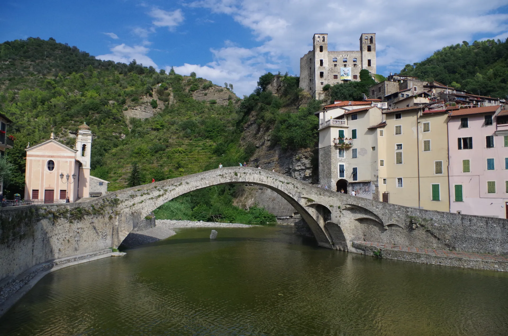

Dolceacqua
Es la joya indiscutible del valle. Se divide en dos núcleos: la "Terra", el barrio más antiguo nacido en el siglo XII a los pies del imponente Castillo de los Doria, y el "Borgo", que se expandió a partir del siglo XV. Ambos están unidos por el puente medieval de un solo arco, cuya elegancia estructural cautivó a Claude Monet en 1884. El pueblo es famoso por sus carruggi oscuros y estrechos que esconden talleres de artistas, y por ser la cuna del Rossese di Dolceacqua, un vino tinto de carácter heroico que fue el primero en recibir la denominación DOC en la región.